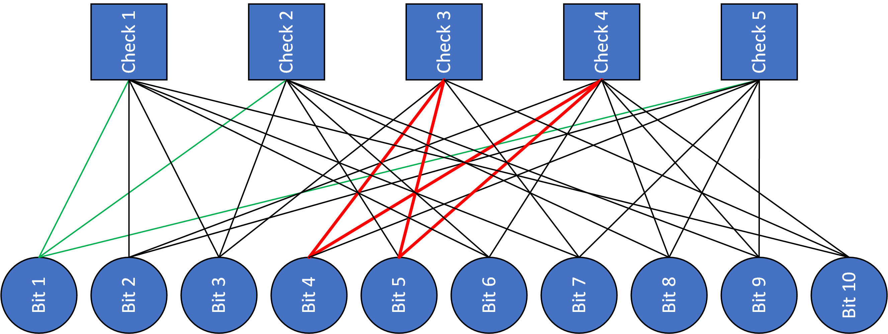
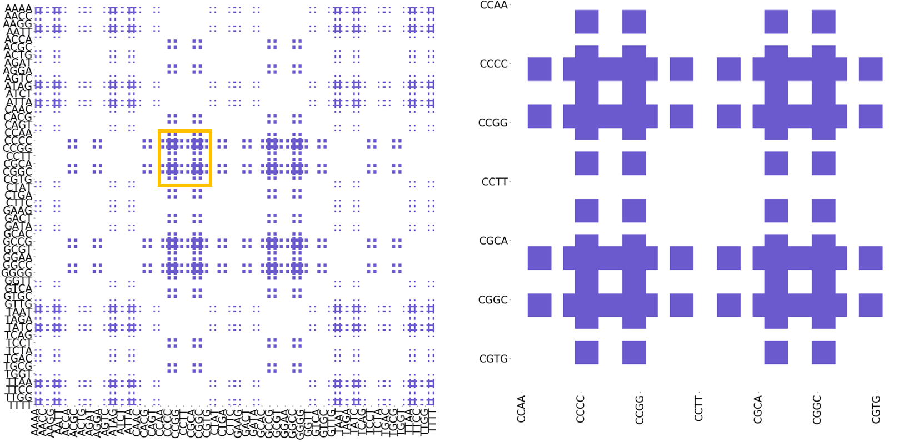
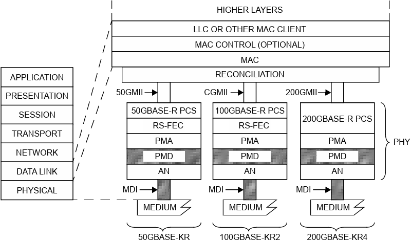
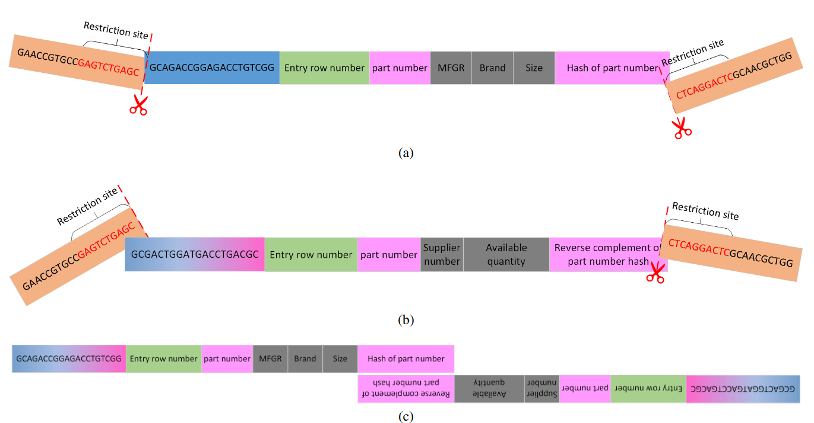

Fish make fish DNA, bananas make banana DNA, what kind of DNA do we need to make to store data ?
My work is around archival storage, i.e.: data that's written once and rarely accessed.
The state of the art in archival storage is magnetic tape (yeah still) and hard disk drives. Tape is actually amazing and is constantly improving, but not at the rate we pile up data (images, video, sensor data, financial records...). The two leading candidates to replace magnetic tape are glass and DNA.
With DNA we are leveraging over 20 years of work in Molecular Biology and Bioinformatics. We are revisiting some of this work with data storage mind, for example: if sequencing is unreliable for small repeat sequences like ATGATGATG... then we can just encode the data to avoid that. So most of the time I try to understand processes in Molecular Biology and how can we use knowledge of the process to: lower the cost, improve write/read throughput, lower the probability of an error ...
Code

Using deep reinforcement learning to learn LDPC codes. In this project we formulate the problem of finding a good Quaci-Cyclic LDPC code as a Markov decision problem (consecutive replacement of circulant sub-matrices) and use PPO to find new parity matrices.

cudaLDPC
A fan-out / fan-in formulation of the Min-Sum decoder written as CUDA kernels using NUMBA. This is the powerhouse that makes consecutive evaluation of LDPC codes possible when only the dimension of the parity matrix is known.

Euclid
A one-stop-shop encoding for data onto DNA that can accommodate multiple local constraints... ...and some global ones.

A space to develope 802.3 physical layer functions.

DNA join and content detection
First steps of near storage compute in DNA data storage.

Code for Reed Solomon Error Correcting Codes. RS codes are popular in storage applications and are the foundation for some RAID protocols. They are especially useful in storage that is spread over multiple disks or servers, since an indication that a server or a disk is down is considered an erasure rather than an error.

{kind=link}
{kind=link}
{kind=link}
{kind=link}